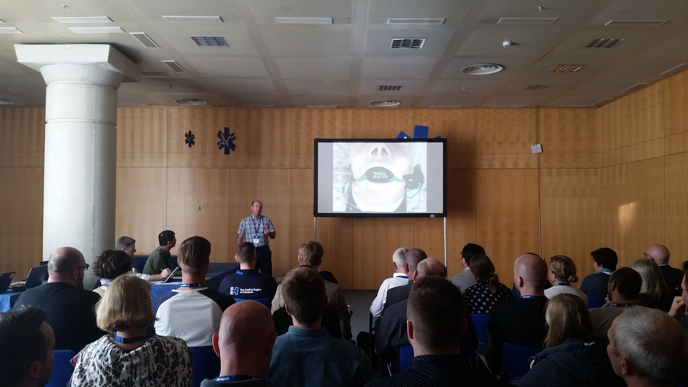
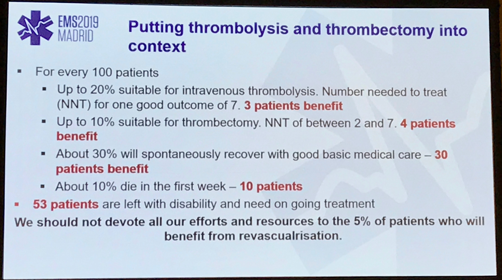
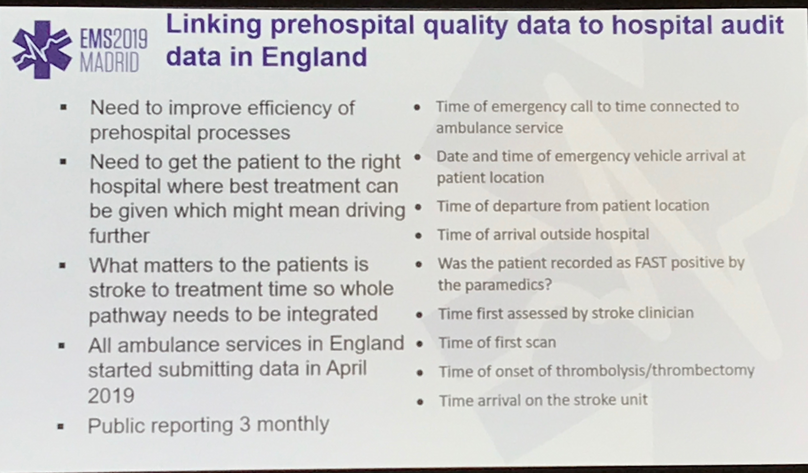

I recently was lucky enough to go to the EMS2019 Madrid conference in Spain. SATIATED was shortlisted for an oral abstract. Made it into the top 10 and got some glass. Nice.

I really was there…
However, there were some really interesting talks and discussions at the conference and I thought it helpful to jot a few down here.
Stroke
Lots on stroke at this conference. It kicked off early with one of the initial presentations announcing the upcoming Utstein guidelines on stroke care.
Interesting stats:
1% of EMS calls are for stroke
>50% wait before calling for help
The guidelines focus on 5 themes:
Stroke registry
Early recognition
Public
Implement novel stroke awareness campaigns
Educated public about needing utilise ambulance service
Educate the younger generation, not just (older) at-risk population
Medical
Improve EMS education for op staff and dispatchers
Encourage use of FAST
Focus on in-hospital stroke education (?for patients) during initial stroke admission to identify stroke risk factors and importance of FAST/calling ambulance
+Appoint stroke educators
Remove need for family member consent before thrombolysis
Structural
Develop stroke centre capability maps to assist EMS
Develop telemedicine networks, particularly in remote areas
Develop support systems to enable patients and families to afford the cost of drugs and other treatment after discharge
Prehospital care
Emergency Care
10 programmes to increase survival:
Establish a stroke registry
Create public awareness
Start public education
Improve early recognition
Practice rapid and timely dispatch
Optimise prehospital stroke care and triage
Optimise in-hospital basic and advanced care
User smart technologies
Demonstrate accountability
Create a culture of excellence
In-Hospital Basic and Advanced Care
Pre-notification of incoming stroke by paramedics
Activating stroke team
Rapid patient registration
Moving patient direct to CT scanner by EMS
Not waiting for lab results, unless indicated (e.g. INR)
Administering alteplase (tPA) in the CT scanner of telestroke bay
Really interesting talk from Tony Rudd, a Stroke Consultant at St Thomas’ Hospital and the National Clinical Director for Stroke with NHS England and the London Stroke Clinical Director.
Context
Burden of stroke in Europe - 45% increase in stroke deaths and 32% more DALYs in next 20 years + (2015-2035)
Revascularisation only benefits 5% of stroke patients
10% patients die
30% spontaneously recover with good basic care

Thrombolysis and thrombectomy in context - most patients won’t benefit from revascularisation so good stroke care and rehab is essential
Major barriers
Poor public knowledge/recognition
Inefficient processes pre-hospital/front-door
Thrombectomy services not yet established
Recognition
FAST best of a bad lot
100 screened
62 have stroke/TIA
7 missed
Response
Praised Copenhagen for 21 minute median on-scene time (IQR 16-27 mins)
(Drenck, N., Viereck, S., Bækgaard, J. S., Christensen, K. B., Lippert, F., & Folke, F. (2019). Pre-hospital management of acute stroke patients eligible for thrombolysis – an evaluation of ambulance on-scene time. Scandinavian Journal of Trauma, Resuscitation and Emergency Medicine, 27(1), 3. https://doi.org/10.1186/s13049-018-0580-4
Just about to start project in England - data linkage to include total patient journey time (to justify specialist centres which may lead to increase ambulance journey times).

Not that enthusiastic about stroke ambulances. Felt it was better to have more efficient front door hospital services. Walter 2012 - faster call to decision time (35 vs 76 mins) with stroke ambulance. Walter, S., Kostopoulos, P., Haass, A., Keller, I., Lesmeister, M., Schlechtriemen, T., … Fassbender, K. (2012). Diagnosis and treatment of patients with stroke in a mobile stroke unit versus in hospital: A randomised controlled trial. The Lancet Neurology, 11(5), 397–404. https://doi.org/10.1016/S1474-4422(12)70057-1
Sentinal stroke national audit data 2017-18:
Shortening door to needle time important
Pre-alerts
Stroke team waiting etc.
Lengthening windows for some type of strokes:
Endovascular thrombectomy for ischemic stroke 6 to 16 hours (up to 24 hours in Nogueira study) after a patient was last known to be well plus standard medical therapy resulted in better functional outcomes than standard medical therapy alone among patients with proximal middle-cerebral-artery or internal-carotid-artery occlusion and a region of tissue that was ischemic but not yet infarcted.
Albers, G. W., Marks, M. P., Kemp, S., Christensen, S., Tsai, J. P., Ortega-Gutierrez, S., … Lansberg, M. G. (2018). Thrombectomy for Stroke at 6 to 16 Hours with Selection by Perfusion Imaging. New England Journal of Medicine, 378(8), 708–718. https://doi.org/10.1056/NEJMoa1713973
Nogueira, R. G., Jadhav, A. P., Haussen, D. C., Bonafe, A., Budzik, R. F., Bhuva, P., … Jovin, T. G. (2018). Thrombectomy 6 to 24 Hours after Stroke with a Mismatch between Deficit and Infarct. New England Journal of Medicine, 378(1), 11–21. https://doi.org/10.1056/NEJMoa1706442
Research paramedic, editor of the British Paramedic Journal, educator, Fellow of the College of Paramedics and creator of the free CPD Portfolio Builder